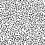
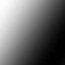
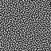
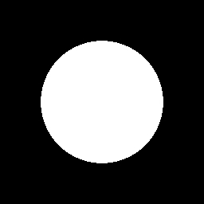
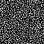
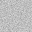
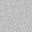

LittlestTokyo - 1 spp
LittlestTokyo - 2 spp
LittlestTokyo - 3 spp
LittlestTokyo - 4 spp
Random scrambling
3D model by Glen Fox
LittlestTokyo - 4 spp
Random scrambling
Correlated scrambling
⚠ not practical
Correlated scrambling
⚠ not practical
Random scrambling
Random scrambling
LittlestTokyo - 4 spp
Random scrambling
Correlated scrambling
⚠ not practical
LittlestTokyo - 4 spp + Denoising
Random scrambling
Correlated scrambling
⚠ not practical
Georgiev and Fajardo [2016]
Georgiev and Fajardo [2016]
Density
$$ d(i,j) $$Random Dithering
$$ d(i,j) > \mbox{rand}(i,j) $$Blue-Noise Dithering
$$ d(i,j) > bn(i,j) $$$bn(i,j)$
1D Dither Mask
3D Dither Mask
XOR scrambling [Kollig & Keller 2002]
CPR [Georgiev and Fajardo 2016]
Chair - 8 spp
Boxed - 1 spp
Georgiev and Fajardo [2016]
Boxed - 16 spp
Georgiev and Fajardo [2016]
Boxed - 16 spp
Georgiev and Fajardo [2016]
| Integrand | Integral - 1spp | Power Spectrum |
|  | ||
|  |  | |
|  |  |
| Integrand | 1spp | 4spp | 8spp | 64spp | 128spp |
|  |  | ||||
function screen_space_sampler(i, j, index, dimension)
{
// Fetch keys associated with pixel (i,j)
scramble = scrambling_keys(i,j)
sort = sorting_keys(i,j)
// XOR the index
index = index ^ sort
sample = sobol_owen(index, dimension)
// XOR the sample
sample = sample ^ scramble
return sample
}
Ours
Georgiev and Fajardo [2016]
Boxed - 1 spp
Ours
Georgiev and Fajardo [2016]
chair - 1 spp
| White-noise | Ours | |
| AO | 0.26 ms | 0.54 ms |
| SSR | 2.81 ms | 3.06 ms |